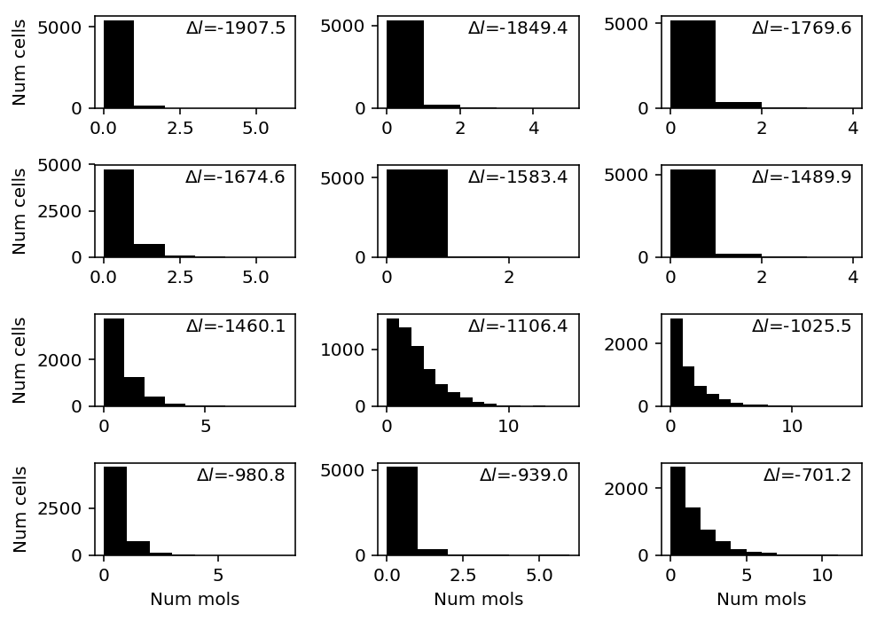
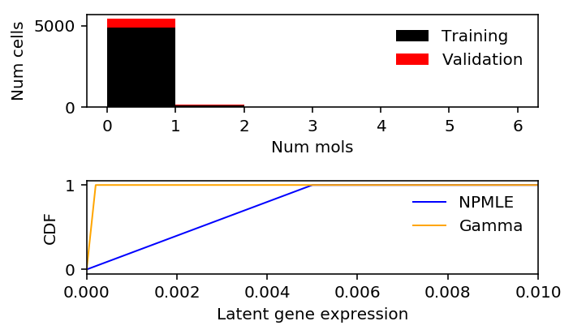

NPMLE on C1 spike-in data
Table of Contents
Introduction
We found NPMLE overfits spike-in data from C1, but not other platforms.
Setup
import numpy as np import pandas as pd import scqtl.simple import sklearn.model_selection as skms import rpy2.robjects.packages import rpy2.robjects.pandas2ri rpy2.robjects.pandas2ri.activate() ashr = rpy2.robjects.packages.importr('ashr')
%matplotlib inline %config InlineBackend.figure_formats = set(['retina'])
import matplotlib.pyplot as plt plt.rcParams['figure.facecolor'] = 'w'
Results
Benchmark
Read the results.
benchmark = {} for data in ('dropseq', 'indrops', 'chromium1', 'chromium2', 'gemcode', 'c1'): benchmark[data] = ( pd.read_csv(f'/project2/mstephens/aksarkar/projects/singlecell-modes/data/deconv-generalization/{data}-gpu.txt.gz', index_col=0, sep='\t') .merge(pd.read_csv(f'/project2/mstephens/aksarkar/projects/singlecell-modes/data/deconv-generalization/{data}-unimodal.txt.gz', index_col=0, sep='\t'), left_index=True, right_index=True) .merge(pd.read_csv(f'/project2/mstephens/aksarkar/projects/singlecell-modes/data/deconv-generalization/{data}-zief.txt.gz', index_col=0, sep='\t'), left_index=True, right_index=True) .merge(pd.read_csv(f'/project2/mstephens/aksarkar/projects/singlecell-modes/data/deconv-generalization/{data}-npmle.txt.gz', index_col=0, sep='\t'), left_index=True, right_index=True))
Find genes where NPMLE does worst against Gamma.
T = benchmark['c1'] llik_diff = T["npmle"] - T["gamma"] query = llik_diff.sort_values().head(n=12).index
c1 = data['c1']()
plt.clf() fig, ax = plt.subplots(4, 3) fig.set_size_inches(7, 5) for a, k in zip(ax.ravel(), query): a.hist(c1[:,k], bins=np.arange(c1[:,k].max() + 1), color='k') a.text(x=.95, y=.95, s=f"$\Delta l$={llik_diff.loc[k]:.1f}", horizontalalignment='right', verticalalignment='top', transform=a.transAxes) for y in range(ax.shape[0]): ax[y][0].set_ylabel('Num cells') for x in range(ax.shape[1]): ax[-1][x].set_xlabel('Num mols') fig.tight_layout()

Extract examples
x = c1[:,query][:,0] s = c1.sum(axis=1) lam = x / s train, val, train_s, val_s = skms.train_test_split(x, s, test_size=0.1, random_state=1) train_lam = train / train_s
K = 200 grid = np.linspace(0, train_lam.max(), K + 1) gamma_res = scqtl.simple.fit_nb(train, train_s) npmle_res = ashr.ash_workhorse( pd.Series(np.zeros(train.shape)), 1, outputlevel=pd.Series(['fitted_g', 'loglik']), lik=ashr.lik_pois(y=pd.Series(train), scale=pd.Series(train_s), link='identity'), g=ashr.unimix(pd.Series(np.ones(K) / K), pd.Series(grid[:-1]), pd.Series(grid[1:]))) npmle_val_res = ashr.ash_workhorse( pd.Series(np.zeros(val.shape)), 1, outputlevel='loglik', lik=ashr.lik_pois(y=pd.Series(val), scale=pd.Series(val_s), link='identity'), fixg=True, g=npmle_res.rx2('fitted_g'))
gamma_train_llik = gamma_res[-1] npmle_train_llik = np.array(npmle_res.rx2('loglik')) gamma_val_llik = st.nbinom(n=gamma_res[1], p=1 / (1 + val_s * gamma_res[0] / gamma_res[1])).logpmf(val).sum() npmle_val_llik = np.array(npmle_val_res.rx2('loglik'))
npmle_train_llik.sum() - gamma_train_llik.sum()
-13918.570811914533
npmle_val_llik.sum() - gamma_val_llik.sum()
-1543.3543034150318
lam_grid = np.linspace(0, lam.max(), 5000) gamma_cdf = st.gamma(a=gamma_res[1], scale=gamma_res[0] / gamma_res[1]).cdf(lam_grid) npmle_cdf = ashr.cdf_ash(npmle_res, lam_grid)
plt.clf() fig, ax = plt.subplots(2, 1) fig.set_size_inches(5, 3) h = ax[0].hist(train, bins=np.arange(0, x.max() + 1, 1), color='k', label='Training') ax[0].hist(val, bottom=h[0], bins=np.arange(0, x.max() + 1, 1), color='r', label='Validation') ax[0].legend(frameon=False) ax[0].set_xlabel('Num mols') ax[0].set_ylabel('Num cells') ax[1].set_xlim(0, 0.01) ax[1].plot(np.array(npmle_cdf.rx2('x')).ravel(), np.array(npmle_cdf.rx2('y')).ravel(), c='b', label='NPMLE', lw=1) ax[1].plot(lam_grid, gamma_cdf, c='orange', label='Gamma', lw=1) ax[1].set_xlabel('Latent gene expression') ax[1].set_ylabel('CDF') ax[1].legend(frameon=False) fig.tight_layout()

Look at the grid.
lam.max()
1.0
Investigate where the MLE \(\hat\lambda = x / s = 1\).
np.where(s == 1)
(array([867, 869, 872, 873, 874, 875, 877, 883, 887, 893, 895, 896, 897, 898]),)
c1[867]
array([0, 0, 0, 0, 0, 0, 0, 0, 0, 0, 1, 0, 0, 0, 0, 0, 0, 0, 0, 0, 0, 0, 0, 0, 0, 0, 0, 0, 0, 0, 0, 0, 0, 0, 0, 0, 0, 0, 0, 0, 0, 0, 0, 0, 0, 0, 0, 0, 0, 0, 0, 0, 0, 0, 0, 0, 0, 0, 0, 0, 0, 0, 0, 0, 0, 0, 0, 0, 0, 0, 0, 0, 0, 0, 0, 0, 0, 0, 0, 0, 0, 0, 0, 0, 0, 0, 0, 0, 0, 0, 0, 0])
Check whether size factor equal to 1 is sensible.
annotations = pd.read_csv('/project2/mstephens/aksarkar/projects/singlecell-qtl/data/scqtl-annotation.txt', sep='\t') keep_samples = pd.read_csv('/project2/mstephens/aksarkar/projects/singlecell-qtl/data/quality-single-cells.txt', sep='\t', header=None, index_col=0) annotations.loc[np.logical_and(keep_samples.values.ravel(), (annotations['mol_ercc'] == 1).values.ravel())].shape[0]
10
NPMLE does poorly because our choice of grid is suboptimal.